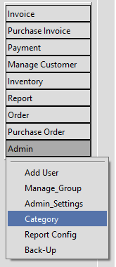
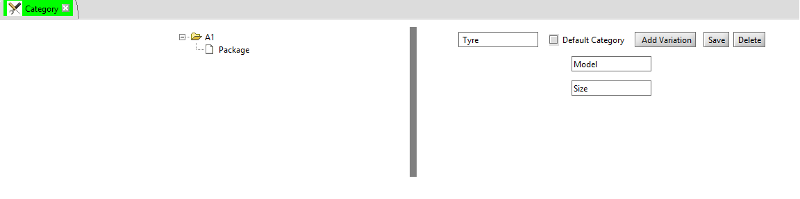

Products are mapped to a category, hence it is important to create meaningful category (grouping of products)
On the Left menu click, Admin >> Category
Configuration Screen looks as below
 where, Left section displays the list of configured category, on click of (+) will expand its variation - skus (stock keeping units) on click of category, will ppopulate right section, where we can edit Right section allows to create new/edit exisiting category, Add Variation will be available only for top node, creates a text box where we can feed variation name